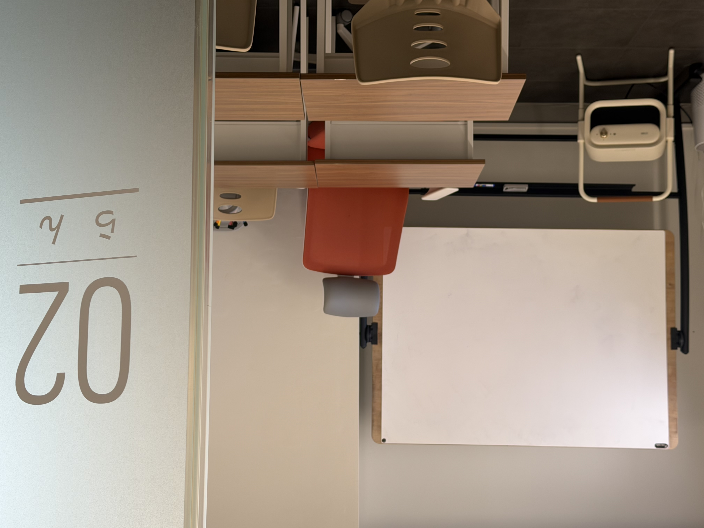
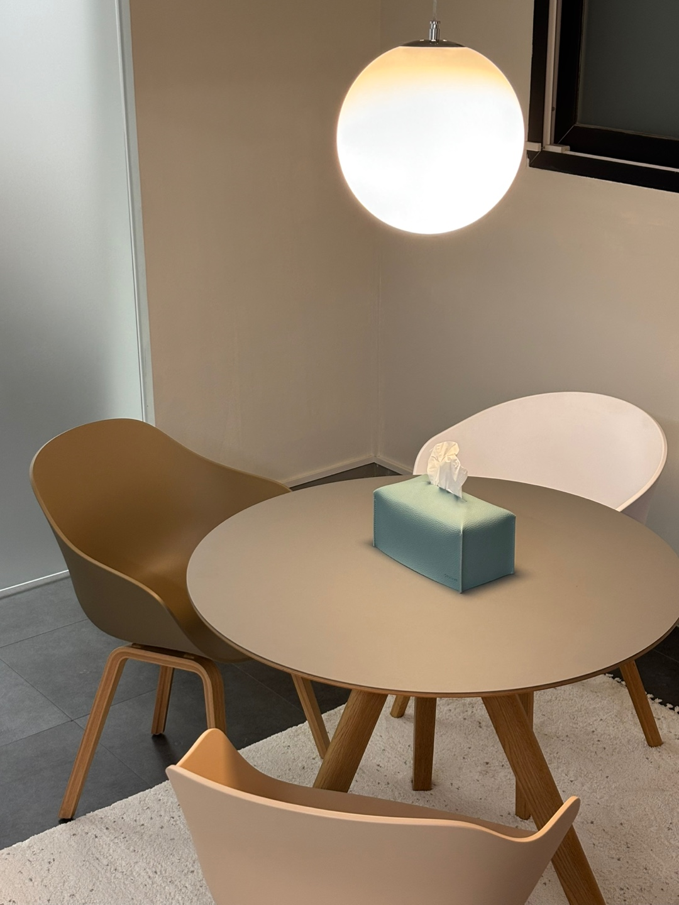

목표에서 출발하기
희망 대학과 전형을 바탕으로 준비할 내용을 정리합니다.
ABOUT TANSO JUKU
와세다 출신 원장 직강 · 신사동 가로수길 일본어 1:1 전문 학원
01 / DIRECTOR

DIRECTOR / 정하민
일본 대학에서의 배움과 일본어 교육·통번역 현장의 경험을 바탕으로, 학생마다 다른 출발점에 맞춰 수업합니다. 일본어의 기초부터 EJU, 지망이유서, 본고사와 면접, 출원까지. 목표 대학을 향한 준비를 한 단계씩 함께하겠습니다.
02 / PHILOSOPHY
희망 대학과 전형을 바탕으로 준비할 내용을 정리합니다.
현재 수준을 기준으로 필요한 부분을 일대일로 공부합니다.
일본어 학습과 시험·본고사 준비를 하나의 흐름으로 연결합니다.
03 / TEACHERS
TANSO JUKU / 원장
와세다대학교 인간과학부 · 한국외국어대학교 통번역대학원
담당 과정
EJU · 지망이유서 · 면접 · 본고사 · 출원 · 컨설팅 · 기초 일본어

TANSO JUKU / 강사
무사시노미술대학교
담당 과정
기초 일본어 · JLPT · 회화 · 비즈니스 일본어
TANSO JUKU / 강사
오사카대학교
담당 과정
EJU · 지망이유서 · 면접 · 본고사
04 / SPACE



CONSULTATION
목표 학교와 현재 수준, 준비 일정을 함께 정리해 보세요.